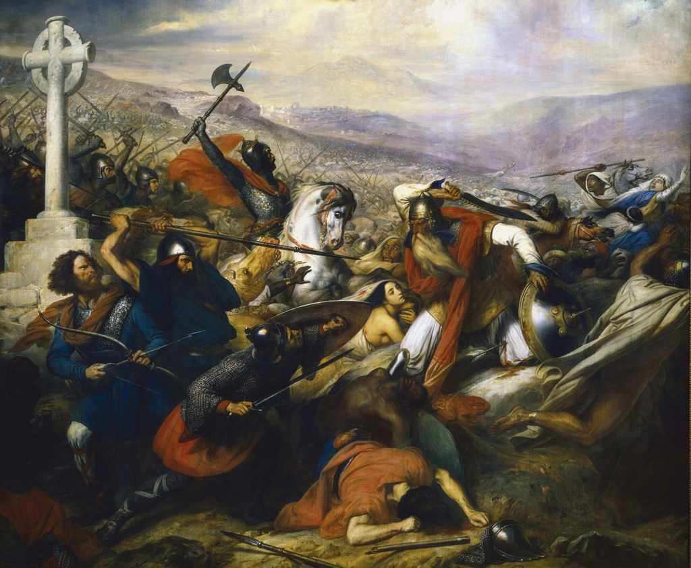
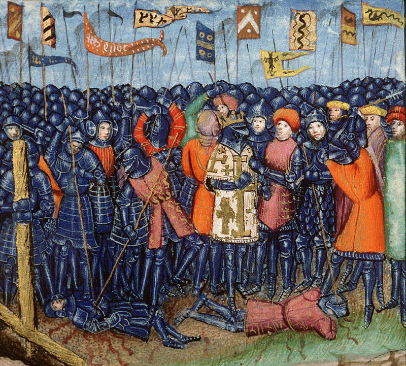
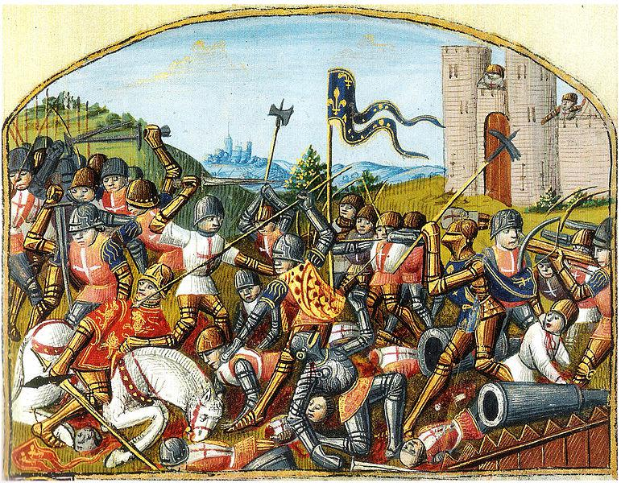

Středověk je tradiční označení dějinné epochy mezi koncem antické civilizace a začátkem novověku, které se poprvé objevilo v období renesance. Středověk je obvykle ohraničen pádem Západořímské říše v roce 476 a pádem Konstantinopole roku 1453, případně objevením Ameriky Kryštofem Kolumbem roku 1492, či zveřejněním 95 tezí Martinem Lutherem roku 1517, zaokrouhleně tedy tisíciletí mezi léty 500 a 1500 neboli deset století od šestého po patnácté.
Bitva u Tours
Bitva u Tours (známá též jako bitva u Poitiers) je jedna z nejdůležitějších bitev 8. století. Odehrála se v říjnu (pravděpodobně někdy mezi 10. a 25. říjnem včetně) 732 mezi Tours a Poitiers. Vojsko Franské říše vedené Karlem Martelem v ní porazilo armádu Umajjovců emíra Abd ar-Rahmána. Zdroje se rozcházejí v tom, zda šlo o velkou bitvu, která je často heroizována, nebo jen likvidaci umajjovských průzkumných oddílů. Ve zdrojích převládá názor, že šlo o velkou bitvu. Je zřejmé, že by drobná půtka Umájovce nezastavila a zřejmě by v ní ani nepadl velitel armády, který pochodoval s jejím jádrem. Bitva je považována za konec muslimské invaze do Evropy.
Bitva u Hastingsu
Bitva u Hastingsu se odehrála 14. října 1066 a skončila rozhodným vítězstvím normanského vojska a byla základem ovládnutí Anglie Normany. Jednalo se o střetnutí armády vedené Vilémem, vévodou z Normandie a anglosaského vojska vedeného anglickým králem Haroldem Godwinsonem. Bitva se odehrála na Senlackém vrchu, přibližně 10 km na severozápad od Hastingsu (dnes se zde nachází obec Battle). Bitva skončila vítězstvím Normanů, Harold Godwinson byl zabit, jak se tradičně uvádí, šípem, který ho zasáhl do oka. I když se později objevil anglický odpor, tato bitva byla rozhodujícím momentem v získání Vilémovy vlády nad Anglií. Události předcházející této bitvě i průběh střetu samotného byl později zachycen na proslulé tapisérii z Bayeux. Na místě bitvy bylo krátce nato postaveno opatství Batlle Abbey
Bitva u Hattínu
Bitva u Hattínu mezi křižáckým Jeruzalémským královstvím a sultánem Saladinem se odehrála v sobotu 4. července 1187 pod horou Hattínské rohy a skončila drtivou porážkou křižáků. Bitva byla rozhodujícím střetem ve vleklém konfliktu mezi křižáky a Saladinem a na jejím výsledku záviselo přežití křižáckých států v Levantě, z nichž se války účastnilo Jeruzalémské království a jeho vazal Tripolské hrabství, zatímco druhý vazalský stát, Antiochijské knížectví, vyhlásilo neutralitu. Jeruzalémský král Guy de Lusignan vytáhl do boje s největší a nejdražší armádou, jakou se kdy křižákům v Palestině podařilo sestavit. Po krátkém tažení pouštní krajinou nedaleko Genezaretského jezera se křižáci nechali bez zásob vody obklíčit na kopci se dvěma vrcholy, zvaném Hattínské rohy. Druhého dne ráno se vyčerpaní křižáci pokusili o průlom z obklíčení, podařilo se to však jen zlomku z nich. Zbytek jeruzalémského vojska zůstal uvězněn na kopci a byl postupně decimován, až dokud muslimové nezajali samotného jeruzalémského krále. Bitva tak skončila zdrcující porážkou křižáků a znamenala obrat ve vývoji křižáckých států. Saladin poté zaútočil na zbytek království a muslimové tak od křižáků získali zpět téměř celé území Palestiny včetně Jeruzaléma. Z držav Jeruzalémského království se udržel jen přístav Tyros a několik hradů. Evropa na vojenskou katastrofu reagovala vyhlášením třetí křížové výpravy.
Bitva u Bouvines
Bitva u Bouvines se odehrála ve Francii 27. července 1214. Střetla se zde vojska Filipa II. Augusta s vojsky koalice Anglie, Svaté říše římské a Flander. Vzhledem k velké účasti vznešených mužů pocházejících ze severozápadní Evropy se stala bitva opravdu mohutným střetnutím a nelze ji srovnat skoro se žádnou jinou bitvou té doby (nepočítáme-li křížové výpravy). Bitva skončila naprostým vítězstvím Francie a král Filip tak mohl dokončit sjednocení svého území. Tato bitva je důležitým mezníkem pro dva státy, a to pro Francii a Anglii. Francouzi se zmocnili území dříve patřícího Anglii a díky tomu byla zachována integrita státu. Prohra Anglie v této bitvě ještě více podlomila moc anglického krále Jana Bezzemka a ten na nátlak svých šlechticů přijal tzv. Magnu chartu. Bitva také vedla k pádu Oty IV. Brunšvického a k oslabení moci Flander.
Bitva u Mohi
Bitva u Mohi bylo jedno z důležitých střetnutích mezi vojsky uherského krále Bély IV. a mongolskou říší chána Bátúa. Došlo k němu 11. dubna 1241 nedaleko obce Mohi u přechodu přes řeku Slaná. Bitva měla za následek zdrcující porážku uherských vojsk a král Béla i kníže Koloman se zachránili útěkem, arcibiskup Ugrín se utopil v močále. Po bitvě následovalo přes rok trvající plenění mongolských vojsk v zemi.
Bitva u Morgartenu
Bitva u Morgartenu byla bitva mezi arcivévodstvím Rakouska a Švýcarské konfederace. Morgarten je švýcarský vrchol. Vojsko Švýcarské konfederace se skládalo ze tří kantonů, jimiž byly Uri, Schwyz a Unterwalden. I když Rakousko táhlo s jasnou přesilou, Švýcarské oddíly se zatarasily v obtížném terénu, kde jízda Habsburků neměla šanci se uplatnit. Díky tomu vyhráli Švýcaři. Švýcarská vojska využila znalost terénu spojená s bažinami a kopci. V bitvě bojovaly prvé ze tří kantonů Švýcarska.
Bitva u Castillonu byla rozhodující bitvou stoleté války. Odehrála se 17. července 1453 v jihozápadní Francii poblíž městečka Castillon v Akvitánii. John Talbot, vévoda ze Shrewsbury, plánoval se 3000 muži dobýt Castillon, ale byl napaden Jeanem Bureauem, francouzským velitelem, jenž měl 7000–10 000 mužů. Shrewsbury, oklamaný odchodem jezdců z francouzského vojska, se domníval, že většina vojáků ustoupila z tábora a podnikl rychlý útok, aniž čekal na příchod svých pěšáků. Francouzský tábor byl ale obehnán zákopy a palisádou a francouzské vojsko bylo navíc vyzbrojeno 300 děly a množstvím ručních palných zbraní. Anglický útok byl odražen a Shrewsbury s mnoha svými muži padl při francouzském protiútoku jezdectva vévody bretaňského. Zbytky anglického vojska uprchly ve zmatku. Francouzští vojáci potvrdili svou převahu a vybojovali konec stoleté války. Anglii zůstalo pouze malé území kolem Calais (které nakonec ztratila až roku 1558) a jinak přišla o všechny državy ve Francii i o nárok na francouzský trůn.
Bitva u Bosworthu (22. srpen 1485), byla vojenským střetem, ve kterém Jindřich Tudor, z rodu Lancasterů porazil vojsko Richarda III., ukončil tak vládu rodu Plantagenetů na anglickém trůnu a zahájil panování rodu Tudorovců. Tato bitva bývá považována za ukončení válek růží a stejně tak i období středověku v Anglii, i když se v tomtéž roku odehrály jiné bitvy proti příslušníkům rodu Yorků, kteří si činili nárok na anglický trůn. Richard III. byl posledním anglickým králem, který padl v bitvě.
Ⓒ Rostislav Hořava